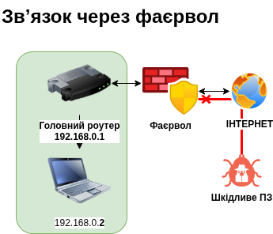
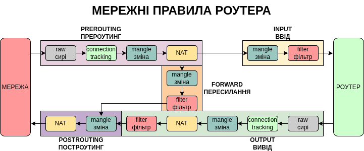

Якщо комутатор — це перехрестя, а маршрутизатор — це регулювальник на перехресті, то фаєрвол (firewall) — це блокпост на дорозі.
Фаєрвол, або брандмауер (стіна для захисту від поширення вогню) — це “фільтр” або “контрольно-пропускний пункт”, який перевіряє весь трафік (дані), що намагається увійти у вашу мережу або вийти з неї. Він вирішає, кому можна проходити, а кого потрібно зупинити.

Існують різні типи фаєрволів, від найпростіших, які просто перевіряють номера, до складних з глибокою перевіркою пакетів (DPI, Deep Packet Inspection) на загрози, які вимагають високої потужності пристрою та значно сповільнюють мережу. Якщо звичайний фаєрвол — це блокпост, то DPI — це митниця.
Фаєрвол працює на основі набору правил (інструкцій), які ви йому надаєте. Наприклад:
Ці правила записуються в таблицю фільтрів (filter) у відповідні ланцюжки, такі як FORWARD (пересилання пакетів між мережами), INPUT (вхідні пакети до самого роутера), та OUTPUT (вихідні пакети від роутера) .

Без фаєрволу мережа була б відкрита для будь-якої атаки з інтернету. Віруси чи хакери можуть автоматично шукати в мережі вразливі пристрої та підбирати до них паролі чи використовувати вразливості, і фаєрвол — це перший і найголовніший захист від таких спроб.
Міжмережний фаєрвол захищає локальну мережу від зовнішніх загроз, тоді як NAT (Network Address Translation, підміна мережних адрес) приховує адреси абонентів локальної мережі, так що весь трафік йде з єдиної адреси роутера.
Для офісного роутера — заборонити доступ від усіх зовнішніх адрес до внутрішніх компʼютерів, дозволити внутрішнім компʼютерам доступ до всього інтернету КРІМ декількох небезпечних сайтів.
Для релеїв — заборонити доступ до всіх компʼютерів крім тих, куди передається трафік. (Звʼязок точка-точка).
Для фаєрвола, який захищає сервер — дозволити доступ від усіх компʼютерів але тільки на один порт сервера.
Для точки VPN — дозволити доступ з усіх компʼютерів, але тільки на порт VPN.